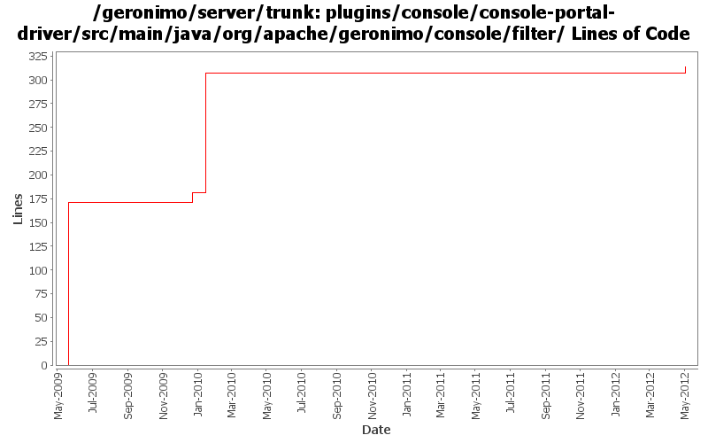

[root]/plugins/console/console-portal-driver/src/main/java/org/apache/geronimo/console/filter

| Author | Changes | Lines of Code | Lines per Change |
|---|---|---|---|
| Totals | 5 (100.0%) | 320 (100.0%) | 64.0 |
| xuhaihong | 2 (40.0%) | 184 (57.5%) | 92.0 |
| genspring | 2 (40.0%) | 129 (40.3%) | 64.5 |
| xiaming | 1 (20.0%) | 7 (2.2%) | 7.0 |
GERONIMO-6340 transform %7c back to | when writing back URL in a form to work around IE URL length limitation, for trunk
7 lines of code changed in 1 file:
Output log of page redirect to debug.
3 lines of code changed in 1 file:
GERONIMO-4994 use hash to keep the page to the latest page viewed after refresh.
126 lines of code changed in 1 file:
Make sure the URLRebuildFilter could work correctly with XSSXSRFFilter
13 lines of code changed in 1 file:
GERONIMO-3599 Unable to create new JMS Resource group through console in IE7
171 lines of code changed in 1 file: